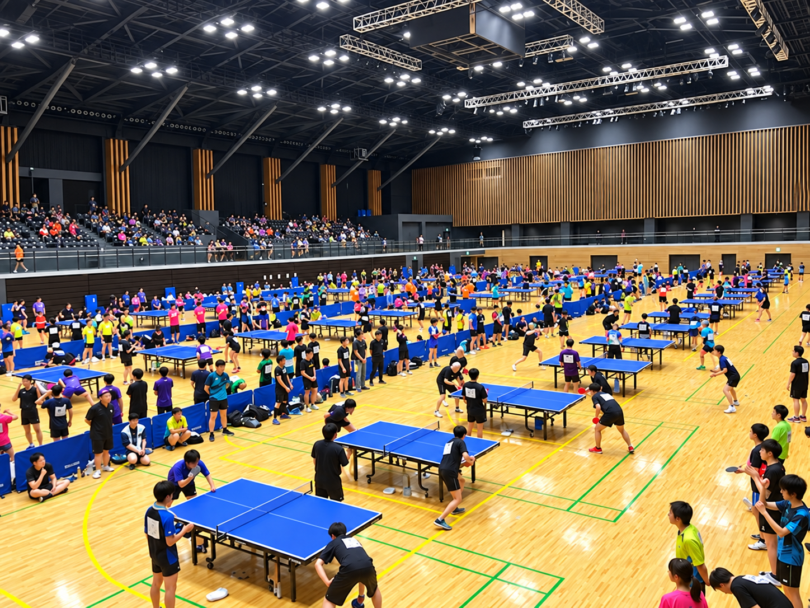

飛べない40代卓球愛好家の視点
横浜リーグ卓球9部の強さは！？勝てな過ぎて悲しい。卓球最下層。
※こんにちは。今回も画像作成は時間がなく、AIにお願いしております。
普段から大会に積極的に出るタイプではなく、団体戦も誘われたら参加するくらいなのですが、今回は第56回横浜後期リーグ卓球大会・男子団体9部に参加してきました。
1部から10部まである大会で9部。数字だけを見るとかなり下のカテゴリーなので、初級者から中級者くらいのレベルを想像する方も多いのではないでしょうか。
しかし、実際に参加してみると、そのイメージとはかなり違います。
9部なのに、普通に強い
男性では初段を持つ選手や、普段から卓球を教えているコーチクラスの選手もちらほら。女性では3段クラスの選手が参加していることもあり、しかもそうした選手でも普通に負けています。
初段というと県大会上位〜全国大会予選突破経験者クラス、３段というと全日本・全日本社会人・全日本実業団などに同一大会で通算5回出場。ざっくり言って全国大会常連レベル。。
9部でこのレベルです。
オープン大会であれば上位に入るレベルが結構いそうで、単純に「9部だから初級者中心」と考えると、かなり危険です。
横浜リーグは、部の数字と実際の競技レベルが必ずしも一致していない大会だと感じました。

8〜10部だけで169チーム
前回の第55回大会では、男子団体8〜10部だけで、8部35チーム、9部55チーム、10部79チーム。合計169チームが参加しています。
仮に1チーム4人としても、600人を超える規模です。
千葉や東京で普段見かけるチームも複数参加しており、横浜や神奈川だけではなく、かなり広い地域から選手が集まっていることが分かります。
「そんなに卓球をやっている人がいるのか」と思ってしまいますが、実際にはかなり多い。
そして、その多くが普通に強い。
今回参加して一番印象に残ったのは、まさにその選手層の厚さでした。
9部という数字だけを見れば、卓球界のかなり下の方にいるような気がします。しかし、実際に試合をすると簡単には勝てません。
自分より経験のある選手、実績のある選手、普段から指導している選手が普通に同じカテゴリーにいます。
アマチュアの世界は、思っている以上に層が厚いようです。
もちろん、10部には多くのチームが参加しているため、最初から高いレベルが必要というわけではありません。何度か参加し、組み合わせや結果に恵まれれば、9部へ昇格することも十分可能です。
ただ、その先で待っている9部も、決して楽なカテゴリーではありません。
選手層おかしくね？ 勝てな過ぎて悲しい。
今回の大会を終えて残った感想は、とても単純でした。
最下層にいるつもりで参加したら、その最下層すら思っていた以上に険しかった。
じゃあ、やめるのか。やめないのか。
強い相手を見ると、やっぱりもう少し練習したくなる。
若い選手が相手をしてくれるだけでも、40代卓球愛好家としては普通に嬉しい。
勝てない日もある、勝てない日しかない。そのくらいが、趣味としてはちょうどいいのかもしれません。
"Still Playing. Still Losing. Still Loving It."